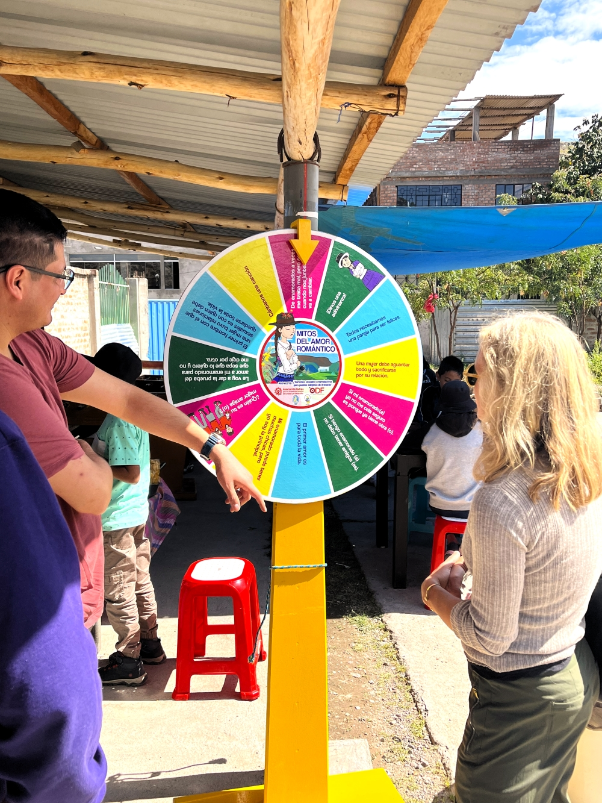

Renzo Severino
I am an applied Economist specialized in causal inference and policy evaluation. My expertise is in Development Economics and Education in Peru.
I hold a Ph.D. from Duke University.
I am an applied Economist specialized in causal inference and policy evaluation. My expertise is in Development Economics and Education in Peru.
I hold a Ph.D. from Duke University.

I use a large administrative dataset and simulations to study the interactions of Venezuelan immigrants and Peruvian schoolchildren
in the context of a large and rapid immigration inflow of Venezuelan families into Peru between 2015 and 2019. In the working aper, I
use quasi-random classroom assignment to quantify and interpret the impact of an additional Venezuelan classmate on the
academic performance of Peruvian eighth graders.
[Working Paper] [Highlights] .

I managed a randomized controlled trial (RCT) to evaluate the impact of a sex education intervention on reducing pregnancy among adolescent girls in rural Peru.
I coordinated with local institutional partners, managed field logistics, and led a team of research assistants in the US and Peru.
[Project Page] .

I have also consulted for institutions such as the Ministry of Education (MINEDU), Ministry of Development (MIDIS), and private firms.
I currently teach Introduction to Microeconomics at Universidad del Pacifico. Previously, I was a Guest Lecturer at Duke University and a Teaching Assistant at Duke, Universidad de Piura, and Universidad del Pacifico. See here for a list of past teaching positions.
Teaching Materials:
Utility Function Graph
Supply and Demand Movements (Spanish)
Multiple-choice questions (Spanish)